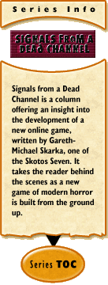

Doomed – Doomed, I Tell You!
by Gareth-Michael Skarka
January 9, 2001
I thought that I would take a look this week at the roles that the players themselves will be taking in Arcana: the werewolves. Given the popularity of the World of Darkness from White Wolf Publishing, I fully expect that their particular view of the lyncanthrope will be a hard one to shake.
As I had said in earlier segments of this column, I want to use the classical werewolf – cursed with lycanthropy, rather than superheroes-with-fur. So, what do I mean by that?
I like the idea of the werewolves in this game having to struggle not only against the forces of Hell, but the Hell within them as well. (Not that I want to go down the well-trodden path of "the Beast within", but hey, it's part of the legend, so I deal) The idea that not only do the Arcana have to combat the enemy, but also have to keep a reign on themselves so that they don't become an even worse threat lends a nice level of tension to the game.
The idea being that the Arcana are able to switch between human and wolf form at will, but they are always struggling to avoiding losing control. This control is harder to maintain during the full moon (gotta keep that lunar cycle in there, after all).
To this end, I'd like to put in some kind of mechanism by which a players actions accumulate a tally of "beast points" (lame name, but it gets the point across). Basically, the way that I'd handle it is to program the game in such a way that the use of certain verbs (kill, maim, slay, etc. etc.) would lead to flags being added to the characters program profile... accumulate too many of those points, and the character loses control, as the wolf within takes over (the player is blocked from giving commands, and the character becomes an NPC for a brief period of time, until their humanity re-asserts itself.
This, obviously, requires that the game moderators keep a close eye on the action of the players, so that they can jump in and take control of characters when the beast kicks in. Pretty easy to do, especially if I set up the points accumulation in such a way that it sends an alert to the moderators when someone tops out their points.
The cycle of the moon will also make the accumulation of those "beast points" easier or harder. An action done under a new moon may not be as much of a threat as the same action done during a full moon. This way, the players would have to keep a close watch on the path that they're treading, for fear of becoming a threat to not only themselves, but their friends and colleagues as well.
I like that... but then again, I'm an evil bastard. Or at least it has been said.
Anyway... mull over that, and then we'll talk further about it next week.